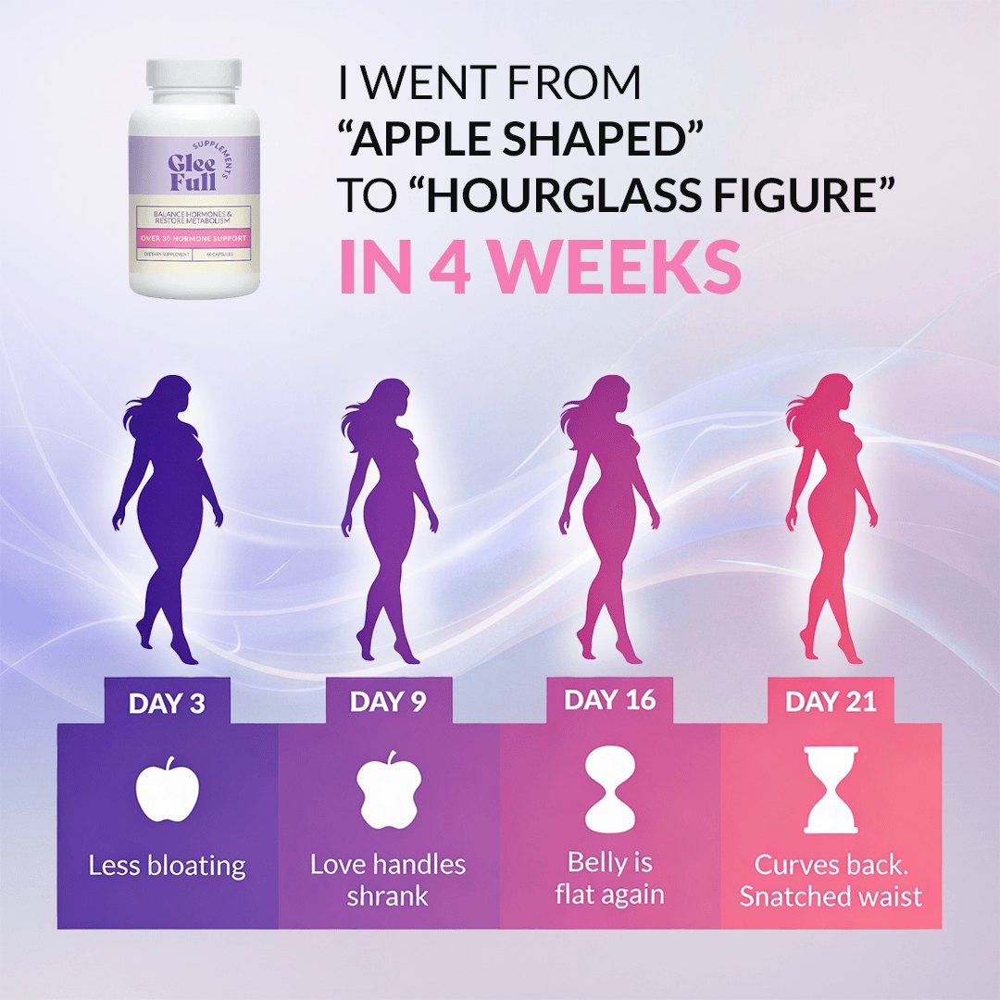
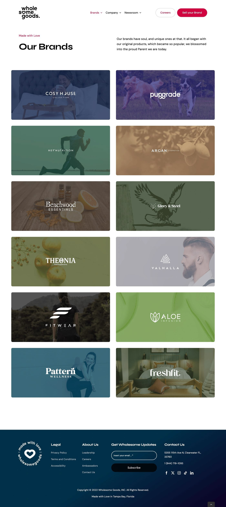
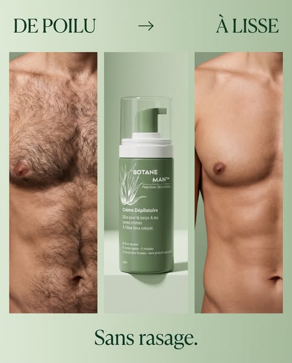
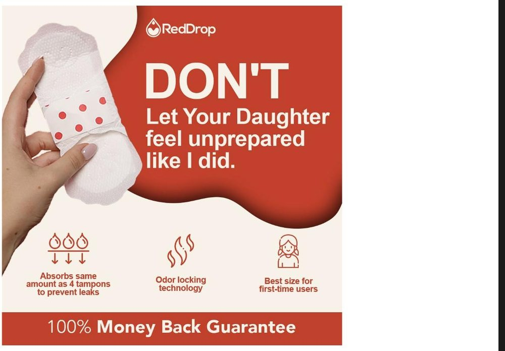
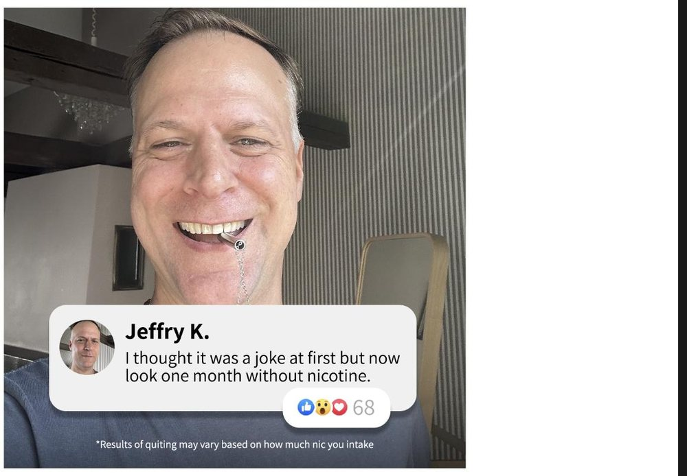
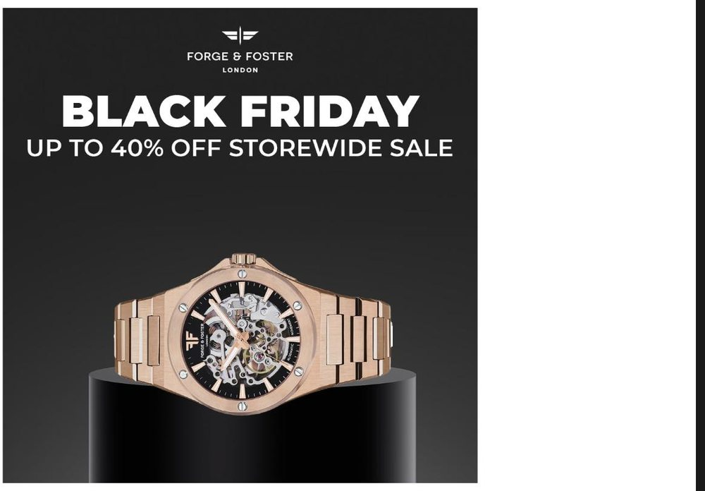
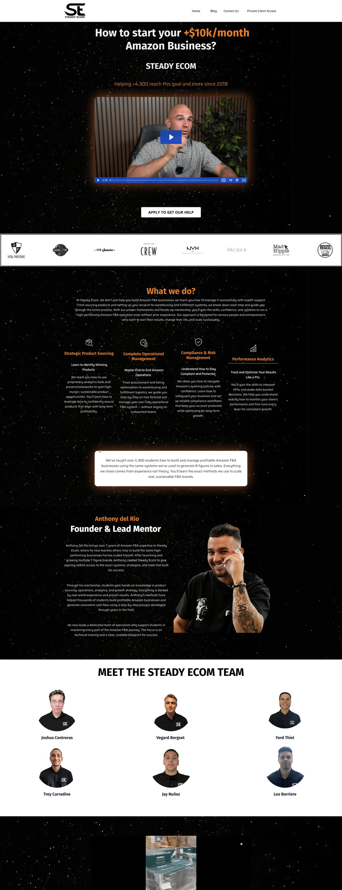
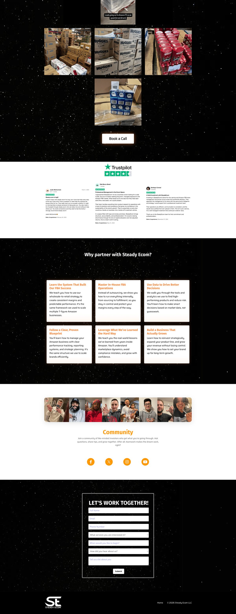

Supplements, vitamins & nutrition
Gleefull Supplements
Flagship · 8-figureDirect-response creative strategy for Gleefull, an eight-figure DTC supplement brand in women's hormone and metabolism support. I own the angle set end to end: awareness and sophistication mapping, hooks and copy written before anything is designed, and statics and UGC video run in parallel against the same angles so the winning message is separable from the winning format.
I scaled the account from roughly $500K to $750K a month in Meta spend without the ROAS falling over, writing inside structure-and-function claim language and FTC and FDA rules from the first draft so a hormone and weight-adjacent product could scale without putting the ad account at risk. The lead angle reframes an identity the buyer already feels — "apple shaped" to "hourglass" — and carries it through a day-by-day proof structure rather than a single before/after claim.

StaticWomen's Supplement Brand — Germany
FlagshipA women's supplement brand launching in Germany in a sensitive niche, where repeated Meta ad-account suspensions limited what could run. From day one I built a compliant, UGC-driven creative system: structured testing, clear angles, and policy-safe messaging that still sold. The brand passed €2.2M in net sales.
Fifty-three campaigns were run across roughly €362K of Meta spend. Statics and UGC video went out in parallel against the same angle set, so a winning message could be identified separately from the format carrying it, and angles were mapped against awareness and sophistication stage before anything was designed.
 Ads Manager
Ads ManagerWholesome Goods — Portfolio Creative
AcquirerWholesome Goods, a US DTC group running around $200M a year across a portfolio of brands, acquired my AI marketing agency (Avalanche AI) in 2025. Effectively a multi-brand DTC roll-up — Atria before Atria existed — spanning health, wellness, supplements, pets and adjacent consumer categories. I stayed on to run creative strategy and build the systems behind it across the portfolio.
I help manage a paid-media budget of roughly $2.5M a month, where the targeting is already solved and creative is the main lever left on spend. I write angles, hooks, scripts and direct-response copy for portfolio brands, grew the creative team, and built the systems layer the creative runs on: research and angle mining, competitor teardowns at scale, compliance checking and brief generation, so a growing team ships more genuinely different concepts per month.

PortfolioNootropic Focus Drink
A natural nootropic focus drink in a crowded functional-beverage market. The job: make a functional drink unmissable in-feed and pull a skeptical, productivity-minded buyer. I built around a blunt thumb-stop hook, a clear product intro, and a comparison angle vs coffee and energy drinks, anchored by a strong star-rating proof point and a BuzzFeed-style founder video for warm audiences.
Because the buyer is sceptical of the category rather than the brand, the system leans on borrowed credibility and side-by-side comparison instead of claiming an outcome directly.
Functional Mushroom Supplement
A functional-mushroom supplement in a crowded category where "why us" is everything. I led an advertorial/listicle creative system built on one differentiator, extraction quality — "Why extraction is everything" — with a three-minute editorial read that pre-sells the science, plus UGC for the focus product to carry everyday-use proof.
Advertorial was the right format because the argument needs room. A 15-second video cannot explain why extraction ratio changes what the customer actually absorbs; a long-form editorial can, and it gives the ad something to say that a competitor cannot copy inside a week.
 Advertorial
AdvertorialMen's health & restricted categories
Men's Sexual-Health Supplement
ComplianceA men's ED / sexual-health supplement in a high-sensitivity, heavily moderated category. The strategy: a problem-aware, disarming creative system. A reverse-psychology video hook to beat ad fatigue and stigma, plus a character-led static to open the conversation without tripping policy. Messaging written around structure-and-function framing to keep the account safe.
The failure mode here is not a bad CPA. It is a dead ad account, and with it every audience signal the account had accumulated. No explicit before/afters, no in-platform disease claims.
 Static
StaticIf your product touches health claims, minors, detox, or anything Meta treats as sensitive, this is the work that matters more than the ROAS number above it. Ask me about it directly.
Beauty, grooming & personal care
Botané — Men's Grooming (BotaneLabs)
SubscriptionA men's grooming DTC brand selling a papain Root-Dissolve depilatory: apply, five minutes, wipe with the included glove, results that hold for about a week. No blade, so no nicks, no burn and no ingrown hairs. I run creative strategy on the account, which means the weekly brief pack, the copywriter handoff, and the reporting the briefs are decided from.
The first thing I changed was not an ad. It was what the account was being judged on. Creative reporting here now runs on hook rate and hold rate rather than first-order ROAS, and the reason is the business model. This is a subscription product with roughly four to six months of retention, so the media cost is paid once at acquisition and every renewal after that carries none. A first order of about fifty dollars is the start of the customer, not the size of them, and a first-order number read on its own will talk you out of creative that is actually working.
Once the reporting changed, the pattern was immediate. The losses were concentrated in a small number of long-form videos, the worst of them a single 111-second animation, while the 25 to 35 second cuts were carrying the account. Length was doing more damage than any hook.

StaticAlso working in beauty and personal care: Seoul Beauty, Collagea and Silkhair.
Women's health
Drug-Free Period Pain Device
A drug-free device for period and endometriosis pain. The audience is in real pain and tired of being dismissed, so the creative leads with empathy and proof. I built a UGC + comparison system: real users wearing the device, a direct "you don't have to experience such pain" message, and a comparison/sale angle to convert the considered, high-intent shopper.
 UGC
UGCFirst-Period Care Brand
A first-period care brand making products for young girls, sold to moms. This is an emotional purchase, not a spec sheet. I led a parent-targeted system built on an empathy hook — "Don't let your daughter feel unprepared like I did" — product reassurance (absorbs like 4 tampons, odor-locking, right size for first-timers), and a money-back guarantee to de-risk the first order.
The structural problem is that the buyer is a parent and the user is a child, and the two need different promises inside a single ad.

StaticHabit change
Quit-Nicotine Brand
A quit-nicotine brand in a category full of skepticism, where social proof is the whole game. I built a UGC and social-proof system: real-person testimonials styled as native social posts (comment + reactions), honest "I thought it was a joke" angles, and compliant results disclaimers, so the creative felt like a friend's recommendation instead of an ad.

StaticFitness & accessories
All-Steel Shaker Bottle
A DTC brand selling the first all-steel shaker bottle. With a physical product, the win is making the differentiators obvious fast. I led a benefits-forward static system (no smell or bacteria, 36+ hour insulation, lifetime warranty, patented all-steel design) paired with a review-led angle, so the creative carried both the spec and the social proof a considered purchase needs.
 Static
StaticApparel, footwear & watches
Vegan Sneaker Brand — Germany
A sustainable vegan sneaker brand (cactus leather) sold into the German market. The strategy was to make sustainability concrete instead of vague. I led a benefits-led creative system in German — veganes Kaktusleder, leicht und bequem, natürliche rutschfeste Sohle, Fußbett aus Bio-Baumwolle — turning each eco-claim into a tangible reason to buy for a values-driven shopper.
 Static
StaticAutomatic Watch Brand
An automatic skeleton watch brand at an accessible price. For a considered, design-led purchase, the creative has to make the product the hero and create urgency at the right moment. I led a product-hero and seasonal-promo system (BFCM, up to 40% off storewide), pairing premium product visuals with clear offer framing to pull the deal-driven buyer.

StaticFunnel & full-stack growth
Steady Ecom — Funnel, Creative & Attribution
$2M / yrAn online coaching business I scaled to $2M a year by owning the entire acquisition system: offer and angle strategy, direct-response creative, funnel, automations and attribution as one loop rather than four disconnected teams. I set the strategy and wrote the ads for a registration offer rather than a product purchase, then built the webinar funnel and follow-up sequences to convert it.
Because I owned the measurement as well as the creative, I could tell which ad actually drove registrations and revenue rather than which one was best at claiming credit in Ads Manager. That full-stack ownership, strategy and creative and tracking in one hand, is what let the account scale predictably.

Funnel · 1
Funnel · 2Background
Scaled SteadyEcom to $2M a year, owning creative strategy alongside the funnel, the automations and the ads attribution — so I read the numbers that say which creative is actually working, not just the ones in Ads Manager.
Built and sold an AI marketing agency (Avalanche AI), with clients including Wholesome Good.
Led a team of 70 at NexxAI across marketing, creative strategy and AI.
Past 5M views on short-form and UGC for a supplement brand, converted to sales rather than left as reach.
Grew a wellness brand from 800 to 13K followers in six months, fully organic.
Compliance: I write inside structure-and-function claims plus FTC and FDA rules. In health and wellness this is usually the difference between a campaign that compounds and an account that gets restricted.
Beyond creative — technical, AI & marketing background
The other half of my background is technical, and it is why I run more concepts than most strategists. I built and sold an AI company, lead teams across marketing, creative and AI, and use AI for research, angle mining, competitor teardowns and briefs at volume. It does not write the ad. It gets me to more genuinely different concepts per month, which is the testing input that actually moves CPA.
Founder & Head of Creative Strategy and AI Transformation — NexxAI. Lead a 70-person team across marketing, creative and AI. Ran enterprise AI adoption for 500+ people across client marketing and commercial teams. Clients: Johnson & Johnson, Novartis, LGT Bank, Government of Catalonia, Orange.
Founder — Avalanche AI (2023–2025). Built and scaled an AI marketing agency serving 20+ DTC and consumer brands. Acquired by Wholesome Goods in 2025.
Director of IT & AI / AI Architect — Amspensan. Platform and data architecture for a US higher-education experiential-learning product, including the tracking, analytics and attribution layer. FERPA and HIPAA aware.
COO & Strategy / Tech Director — HYLN Hub (2024–2026). Ran growth and delivery across creative, funnel, CRM and attribution: 3.8x ROAS and MRR grown from under 2K to 20K+ USD a month.
Gen AI Specialist, Spanish market — BlueSoft (2024–2025). Key account management and delivery of GenAI solutions for clients.
Across these I also lead marketing, not only the technical build: positioning, acquisition and the creative that sits on top of the systems.
Want to see whether the angles hold up on your product?
Send me your product page and your best-performing ad. I'll come back with one free ad brief built for it: the angle, the hook, the script and the iterations I'd test, written out. If it's useful we can talk. If it isn't, you've lost nothing.
Send me your product page on Upwork